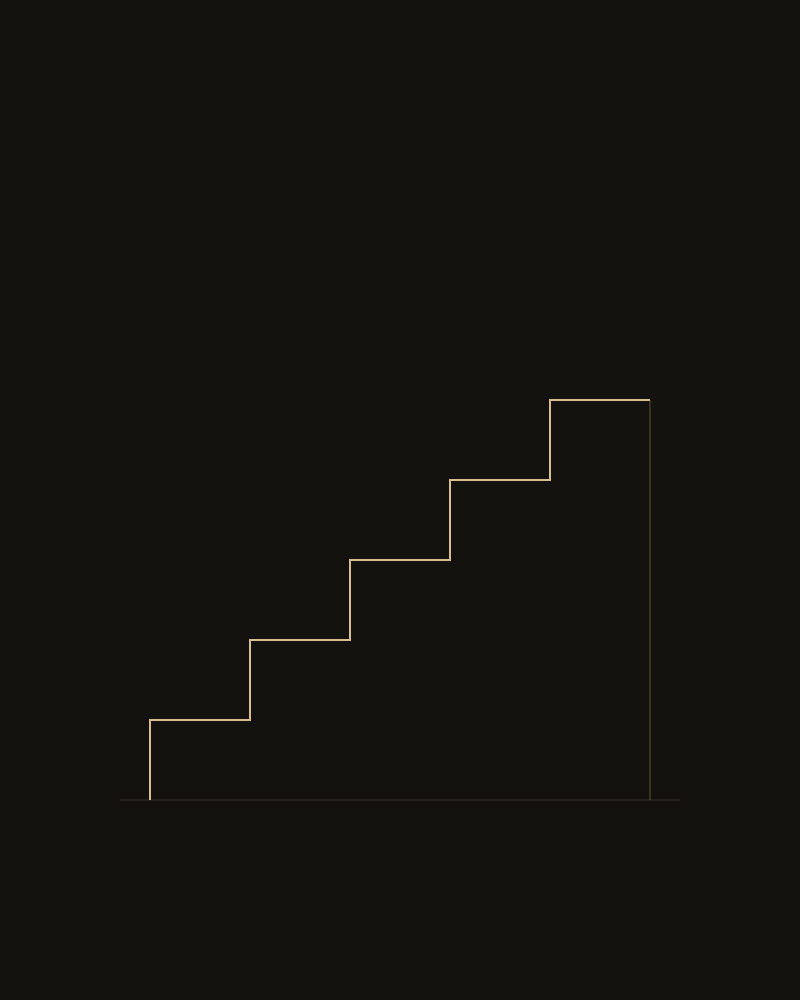
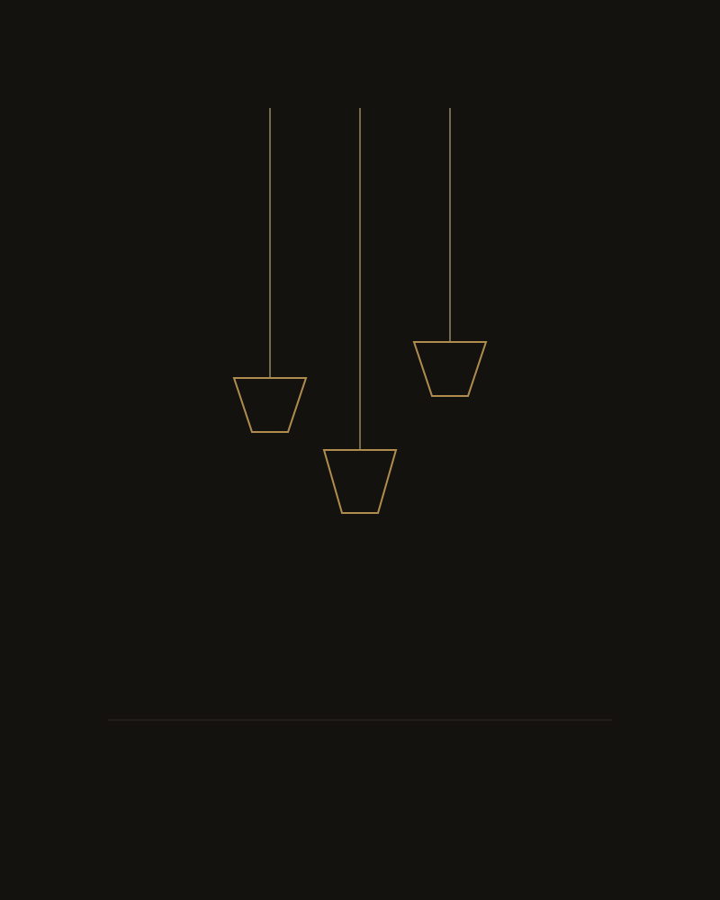
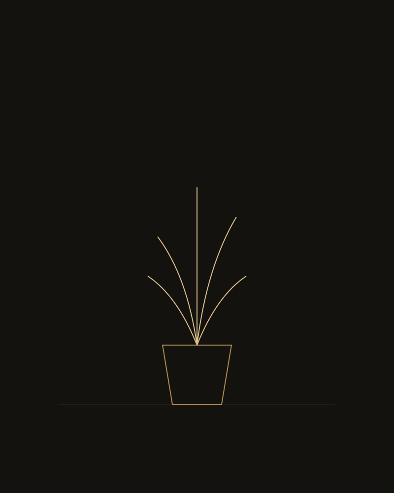
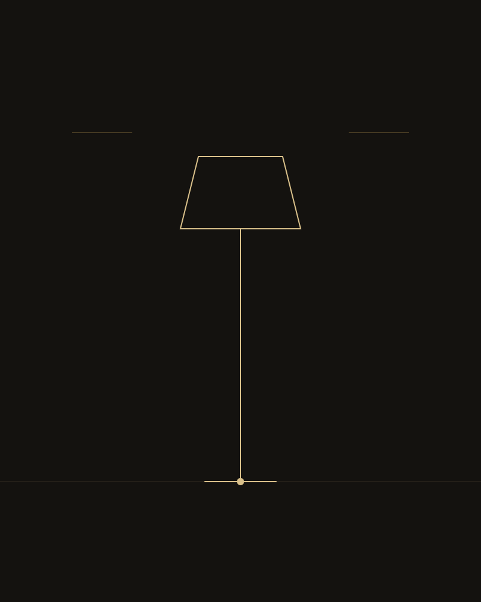
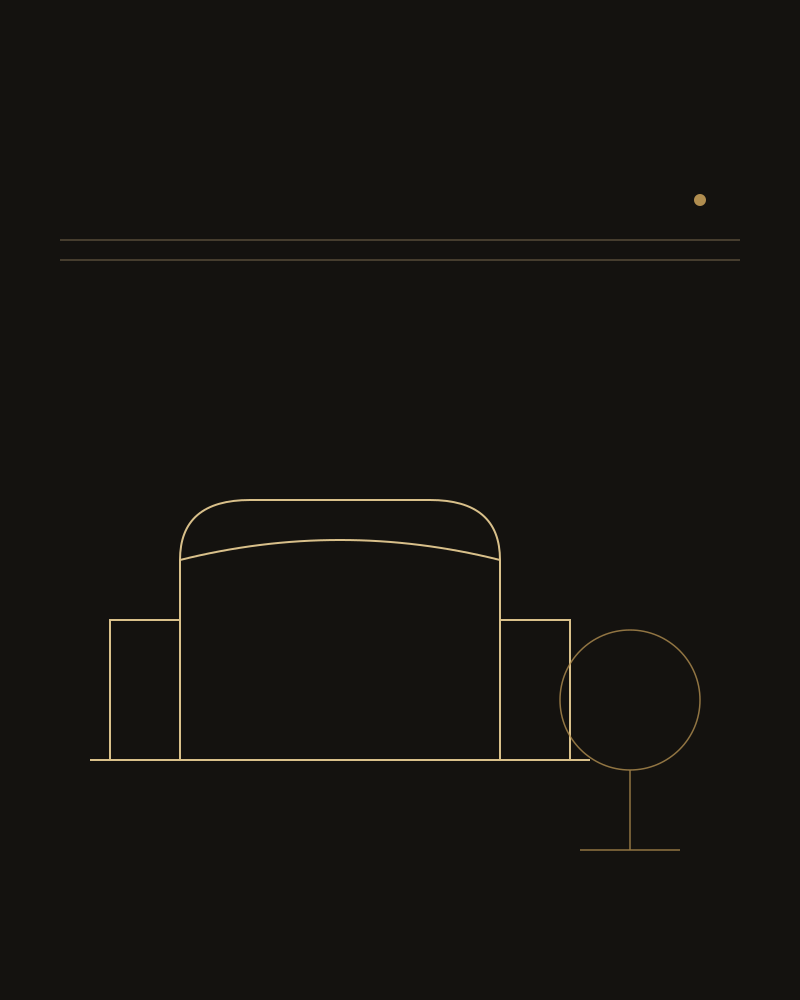

Rezidențial · Ilfov
Vila
Vila
Monochrome
Concept
O casă construită în jurul unei singure scări sculpturale.
Scara centrală, vizibilă din aproape orice cameră a parterului, a devenit reperul vizual al întregii case — și punctul de plecare al conceptului.
Am ales o paletă strict monocromă — negru mat, ivoire și tonuri de gri cald — pentru a lăsa geometria scării și volumele arhitecturale să domine spațiul. Fiecare cameră păstrează aceeași disciplină cromatică, cu variații subtile de textură: piatră brută, lemn afumat, metal periat.
Accentele aurii, folosite cu zgârcenie — o clanță, un corp de iluminat, rama unei oglinzi — punctează spațiul fără a-i rupe echilibrul monocrom.
Galerie
Detalii din Proiect



